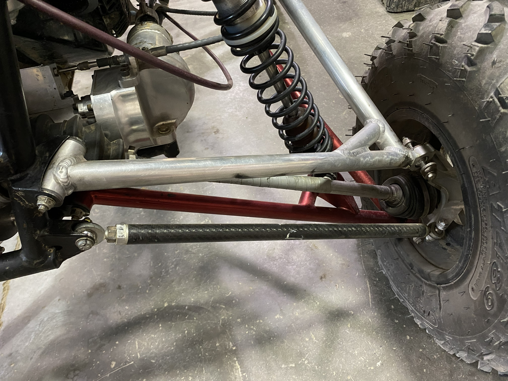
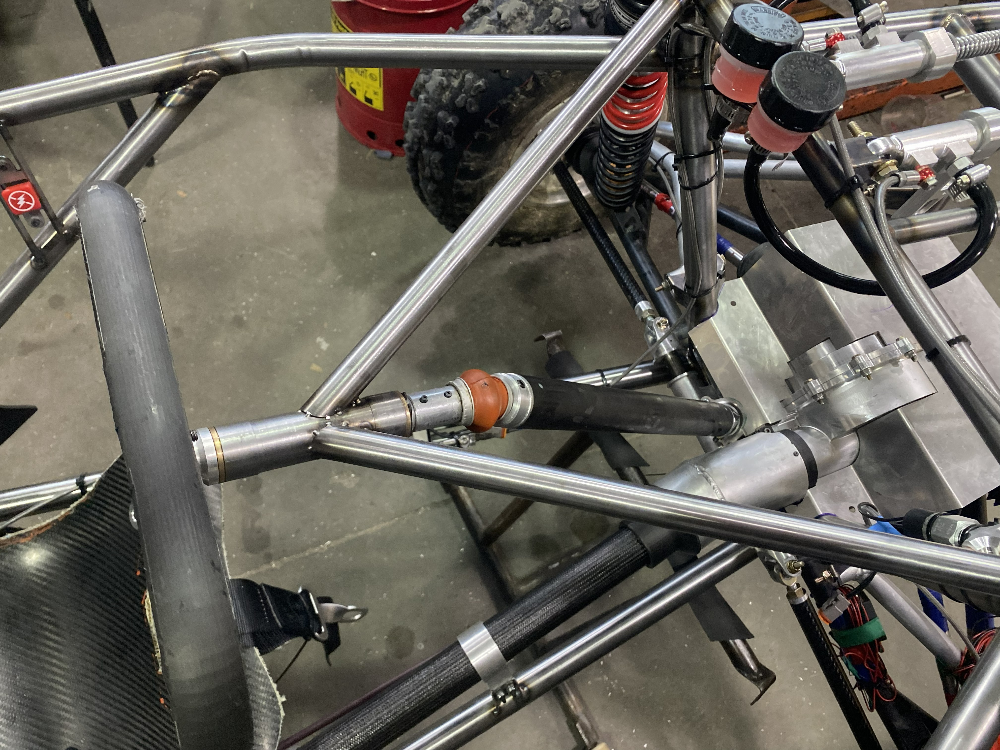
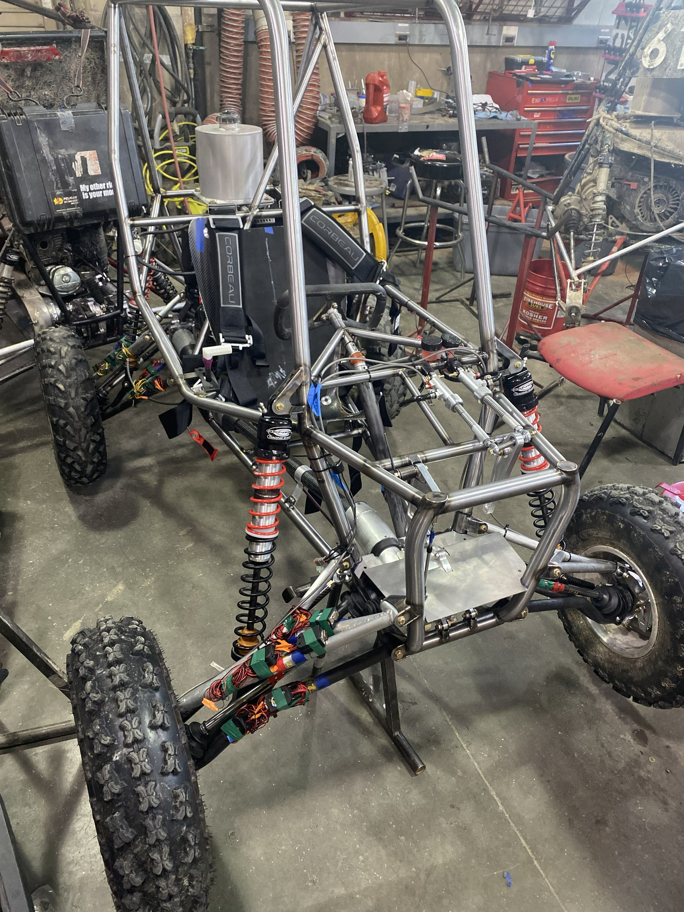
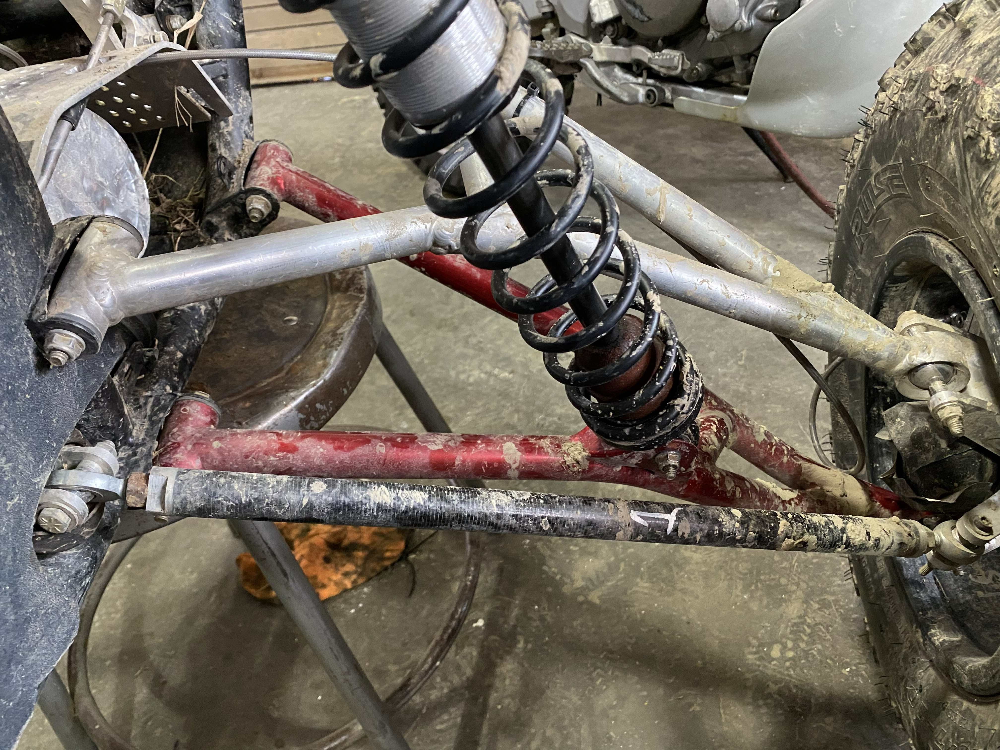

Tie Rods and Steering Column
As a member of the suspension subteam of Cornell Baja Racing, I designed, analysed, manufactured, and tested the tierods and steering column for our vehicle TG21. This car went on to win the memorial Mike Schmidt Award, having finished first in all 3 SAE competitions in the 2025 Baja SAE season.
Overview
We faced various issues with driver steering in the previous competition cycle, so the primary goal for the steering column and tie rods was to implement various changes that would result in improved driver steering effort.
The area where the most improvement could me made was in the orientation of the steering column relative to the driver. Our driver's had given us feedback that they were experiences high levels of shoulder fatigue do to the steering wheel being oriented perpendicular to their bodies. This information was confirmed and quantified through EMG testing on the drivers to identify areas of high fatigue and exertion.
Due to front gearbox packaging constraints, we were unable to change the orientation of the steering rack to allow for a better steering position, so steering changes had to be made in the steering column which was more of an auxilary component that allowed for the design flexibility necessary to make impactful changes. The solution I implemented was the incorporation of a universal-joint into the steering column, allowing for a new degree of flexibility for the steering wheel orientation. I designed various custon universal joints, but we decided to implement a store-bought Apex universal joint due to manufacturing complexity and robustness. This joint allowed for a better steering angle as well as a highly adjustable input-output ratio that established a sinusoidal relation between driver input and wheel output. This relation was tuned to our driver's desires through the clocking of the universal joint in realation to the steering rack. The joint had to a carbon fiber steering column which a bond process optimized for torsional strength. Minor changes were also made to the column to rack interface to reduce fatigue-induced slopping. These design changes were analysed in Ansys prior to their implementation.Details
Role: Design, analysis, fabrication
Tools: SolidWorks, composites, testing
Context: Cornell BAJA SAE
Gallery




